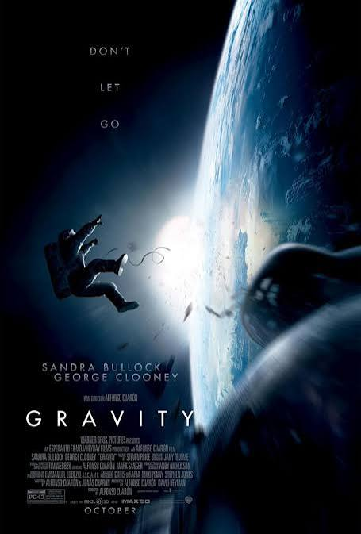
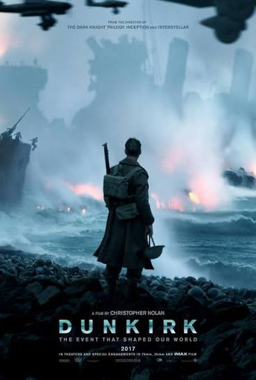
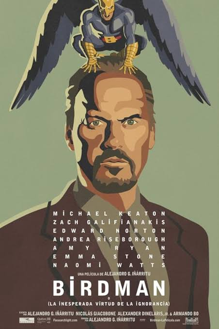
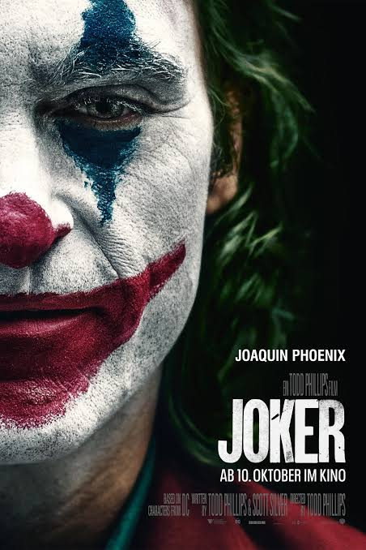

The Wolf of Wall Street
Año: 2013
Director:Martin scorssece
Género:Drama y comedia
.
earn spend party
Un corredor de bolsa neoyorquino se niega a cooperar en un caso de fraude bursátil de gran envergadura que involucra corrupción en Wall Street, el mundo de la banca corporativa e infiltración de la mafia. Basada en la autobiografía de Jordan Belfort.

The Social Network
Año: 2010
Director: David Fincher
Género: Drama biográfico
You don't get to 500 million friends without making a few enemies.
En 2003, Mark Zuckerberg, estudiante de Harvard y programador informático, comenzó a trabajar en un nuevo concepto que con el tiempo se convertiría en la red social global conocida como Facebook. Seis años después, Mark era uno de los multimillonarios más jóvenes de la historia, pero su éxito sin precedentes le acarreó complicaciones personales y legales al verse envuelto en dos demandas, una de ellas contra un antiguo amigo.

The Shape of water
Año: 2017
Director:guillermo del toro
Género: Romantica y ciencia ficción
A fairy tale for troubled times.
Una historia de otro mundo, ambientada en los Estados Unidos de la Guerra Fría alrededor de 1962, donde un conserje mudo que trabaja en un laboratorio se enamora de un hombre anfibio que está cautivo allí y elabora un plan para ayudarlo a escapar.

Gravity
Año: 2013
Director: Alfonso Cuarón
Género: Suspenso y ciencia ficción
Don't let go.
La doctora Ryan Stone, ingeniera en su primera misión espacial, y Matt Kowalski, astronauta en su última expedición, tienen que sobrevivir en el espacio tras ser alcanzados por escombros durante una caminata espacial.

Dunquerke
Año: 2017
Director: Christopher Nolan
Género: belica y aventura
When 400,000 men couldn’t get home, home came for them.
La historia de la milagrosa evacuación de los soldados aliados de Bélgica, Gran Bretaña, Canadá y Francia, que quedaron aislados y rodeados por el ejército alemán en las playas y el puerto de Dunkerque entre el 26 de mayo y el 4 de junio de 1940 durante la Segunda Guerra Mundial.

Mad Max: Fury Road
Año: 2015
Director: George Miller
Género: Acción y aventura
What a lovely day!
En un desierto postapocalíptico, Max se une a Furiosa,
quien intenta liberar a un grupo de mujeres de un
gobernante tiránico. Juntos emprenden una peligrosa
persecución por la supervivencia y la libertad.

La La Land
Año: 2016
Director: Damien Chazelle
Género: Musical y romance
Here's to the fools who dream.
Mia, una aspirante a actriz, sirve cafés con leche a estrellas de cine entre audiciones, y Sebastian, un músico de jazz, se gana la vida a duras penas tocando en fiestas en bares de mala muerte, pero a medida que aumenta el éxito, se enfrentan a decisiones que empiezan a deshilachar el frágil tejido de su relación amorosa, y los sueños que tanto se esforzaron por mantener el uno en el otro amenazan con separarlos.

Bird man
Año: 2014
Director:Alejandro gonzalez Iñarritu
Género: Drama y comedia
How did we end up here?.
Un actor en decadencia, conocido principalmente por su interpretación de un popular superhéroe, intenta relanzar su carrera participando en una obra de Broadway. A medida que se acerca el estreno, sus intentos por ser más altruista, reconstruir su trayectoria y reconectar con amigos y familiares resultan más difíciles de lo esperado.

Parasite
Año: 2019
Director: Bong Joon-ho
Género: Drama y suspenso
Act like you own the place.
Una familia de bajos recursos consigue trabajar poco
a poco para una familia adinerada. Lo que comienza
como una oportunidad económica se transforma en una
historia llena de engaños, tensión y desigualdad social.

Joker
Año: 2019
Director: Todd Phillips
Género: Drama y suspenso psicológico
Put on a happy face.
Arthur Fleck es un hombre solitario que sueña con
convertirse en comediante, pero sufre el rechazo y
la indiferencia de la sociedad. Sus experiencias lo
llevan por un camino oscuro hasta convertirse en el Joker.